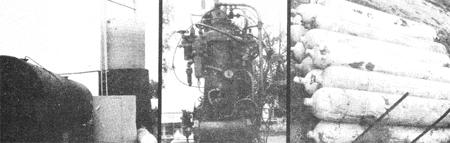
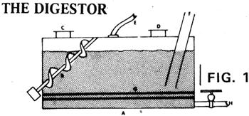
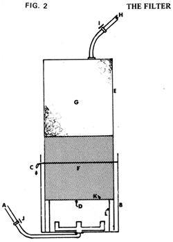
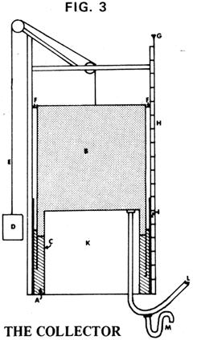
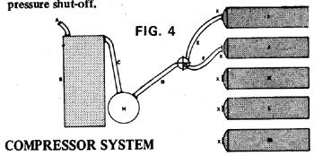
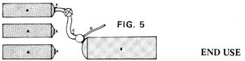

Bill Patch-who rode a bicycle from Minier, Illinois to Redkey, Indiana to see THE Mother Earth News' methane generator last spring-torned right around and rode back to Minier where he and Dale Whitley then proceeded to build a 20,322-gallon anaerobic digester of their own. Does it work? "We burned off 142,450 cubic feet of methane during the four summer months," says Bill. "That's equal to approximately 1,110 gallons of gasoline. As you can see, it's best to get ready to use your gas before you make it!
At the height of production during the summer of 1974, our methane generator would fill its collecting tank a half dozen times a day. Each tankful of gas had a Btu value equal to approximately three gallons of gasoline.
Our most "practical" use of the homemade fuel last summer was merely demonstrating its flammability to visitors by burning off the methane from a pipe at the, top of the collecting tank. When we put pressure on the line, we'd sometimes have a blaze shooting five or six feet into the air. Methane will not liquefy until the temperature of the gas is dropped to-116° F and its pressure is raised to 673 pounds per square' inch. Once it is liquefied, however, methane will stay liquid at atmospheric pressure. Then, as the temperature begins to rise around the edges of the mass of cold liquid, it will vaporize. This loss, when the liquefied fuel is properly insulated, can be held to as low as 2-to-4% a day. Cooling CH4 and transporting it as a liquid is very expensive, so most commercial producers of the gas here in the U.S. merely filter the impurities from their methane and then handle the fuel (compressed to as much as 2,000 psi) in pressure tanks. This is what we plan to do, Our experiments indicate that methane is a very "natural" fuel that is quite easy to make. Just seal manure with straw or hay in it as it comes from the barn, chicken house, or hogpenin an airtight container and, once the oxygen inside has been used up (two to four weeks), the little methaneproducing bacteria will take over. The first gas from a new digester will burn, but to keep the flame going you'll have to hold a lighted match or candle near your burner. In another week or so, however, the methane from your generator will burn just like natural gas with the prettiest blue flame you've ever seen. Before the gas is lit, it has a slight charcoal odor but when it burns, there's no odor ax all!.
EDITORS NOTE: Ram Bux Singly L. John Fry and other experimenters have found that manure mixed with straw "as it comes from the barn" may not always produce the optimum amounts of methane. It may sometimes be necessary to add manure, straw, leaves, spoiled hay, or other material to bring the original waste nearer the 30-to-1 carbon/nitrogen ratio which is ideal for maximum methane production. See Ram Bux Singh's or L. John Fry's books on the subject. In addition, although Mr. Patch doesn't mention it here, you must always remember that homemade methane can be just as explosive as the natural gas commercially supplied by utility companies. For this reason, you must always take every precaution possible to guarantee that any methane you produce is completely under your control at all times. A flame guard or trap should be installed in all lines that carry methane to a gas stove, refrigerator, furnace, or other appliance in which the gas is to be burned. And the first week's production of methane should not be ignited. It may contain enough oxygen to be dangerously explosive. Bleed your digester's initial production off into the atmosphere, then, whenever you're starting up the generation of gas. There will still be plenty of "safe" methane for you to use after this purging process.)
Our 20,322-gallon digester was filled half full of cow, pig, and turkey manure just as it came from the barn, mixed with plenty of hay and straw (some of the cow manure was from a feedlot and some from old cows that had been wintered on hay). Enough water was then run in on top of this manure-straw combination to fill the digester tank three-quarters full.
"A" in this drawing is the 20,322-gallon tank. "B" is an auger for stirring the waste, if necessary. "C" and "D" are filler caps that are sealed after the digester is loaded. "E" is the one-inch hose that carries the generator's gas production through a filter and on to a collecting tank. "F" is an eight-inch pipe through which the digester can be loaded or-with the aid of the pumps on a "honey wagon"-through which the generator can be unloaded (this allows the digester to be recharged without closing it down). "G" shows the four one-inch pipes that carry hot water to warm the slurry to its optimum digestion temperature during the winter. "H" is an eight-inch drain that empties into a 2,887-gallon steel tank buried in the ground. Spent slurry can be held in the buried tank until we're ready to haul it away in a honey wagon.
We plan to place the gas filter shown here in the line
running from the 20,322-gallon digester to the collection tank. "A" in this schematic is the one-inch hose coming from the digester. It feeds into the bottom of "B", a 50gallon barrel cut in half and partially filled with water and lime (2/3 water and 1/3 lime). All the lime is placed inside the smaller, seven-inch-high inner tank, "L". "K" is a grate of 1/4-inch mesh hardware cloth which rests on top of "L" and snugly fits inside "E" which is made of two 30-gallon drums welded together. "E" has no bottom. Instead, it sits down over both "K" and "L" and-from the grate up-is about half filled with metal filings and shavings. "E" can be pulled up out of "B" as necessary, so that the lime in "L" and the metal shavings above "K" can be checked and replaced. "D" is the water level in "L" and "C" is a hole drilled in the side of "B" so that any excess water in the barrel can run out. "H" is a one-inch hose from the filter to the collector tank and "I" and "J" are both shut-off valves. "G" is a final filter of old rags and gunnysacks containing calcium chloride. In operation, gas produced by the 20,322-gallon waste digester will enter the bottom of this filter and bubble up through lime, iron filings, and the calcium chloride in the rags. The lime should remove excess moisture, the filings will trap acids and more moisture, and the calcium chloride will act as the final moisture filter.
Our collector consists of "A", an old water tank
eight feet in diameter and ten feet tall. It contains another old tank (the actual gas collector, shown here as "B") that is "upsidedown", seven feet in diameter and ten feet, four inches in height. A third tank, "C", is welded into the bottom of "A" to form an empty room"K"-six feet across and ten feet high. "D" in this schematic is a 30-gallon drum filled with iron to act as a counterweight, "E" is the steel cable that attaches the weight to "B", and "F" points out the guides that "steer" the collector tank as it is forced up by the gas it traps. "I" is an overflow for the water seal "J" formed by "A" and "C". In operation, methane is forced by nine inches of water pressure from the digester through hose "L" into the collector where it's trapped by upside-down tank "B" and the seal created by the "ring" of water between "A" and "C". Once "B" has filled with enough gas to float the tank upward as far as it can go, the methane will begin to bubble out around its lower edge. That's the signal for us to connect "L" to a compressor (if we haven't done so already) and pump the gas into pressure storage tanks. When gas first began flowing through "L" from our generator to the collector, we found that water tended to condense in the hose and cause problems. So we installed "M", a simple water escape that lets the accumulated water out but keeps the gas in. This is a schematic of the system we use to fill our pressure storage tanks with methane. "A" is the one-inch hose- from the collector. "B" is our compressor. "C", "D", "E", and "F' are high pressure hoses. "G" is a pressure gauge and two-way high pressure valve. (When one tank is full, the two-way valve can be switched to fill a second tank. Then, while that container is charged, the first hose can be attached to a third tank, etc., so that the compressor never has to be shut down until all the collected gas is transferred to pressure storage.) "H" is a high pressure regulator tank and "I", "J", "K", "L", and "M" in this drawing are pressure storage tanks. Each "X" marks a high pressure shut off.
Methane that we've stored in pressure bottles-"A"-is passed through "E", a regulator which reduces the gas' pressure from 2,000 psi to 20. Flexible hose "C" then carries the methane to regulator tank "B", from which a plastic hose directs the gas to a final regulator mounted at point of use to further step the methane's pressure down to the six or seven ounces used by most gas stoves, furnaces, etc. Each "V' in this diagram denotes a shut off valve.
|
 The Patch- Whitley digester is at left and their collector tank is on the right of the first photo. The smaller tank in the center contains a submarine compressor. The compressor weighs approximately 2,000 pounds, runs at 550 rpm and produces 20 cubic feet of 3,000 psi output per minute. Surplus it cost the Patch- Whitley team $1,000 . . . and it takes 55 horsepower to run the half-brass monster. Bill and Dale store some of their methane in 15 surplus submarine air tanks. Each one cost $150 and will hold 15.5 cubic feet of gas at a pressure of 3,000 psi. The system has cost Patch-Whitley a total of $4,000. |
 |
 |
|
 |
 |
 |